Dataset custom
[1]:
# data_option = "dataset1"
# data_option = "dataset2"
data_option = "custom"
Section 1. Initial setup
[2]:
from speciesot import configure_platform, Config, Data, SpeciesOT
[3]:
configure_platform()
# configure_platform("gpu")
# configure_platform("cpu")
JAX is configured to use: METAL
Parameters
[4]:
if data_option == "custom":
mask_option = "one_time_point_data"
threshold = 1.4
threshold_surer = 2.5
high_epsilon = 0.01
elif data_option == "dataset2":
mask_option = "one_time_point_data"
threshold = 1.4
threshold_surer = 2.5
high_epsilon = 0.1
elif data_option == "dataset1":
mask_option = "time_series_data"
threshold = 3.0
threshold_surer = 3.5
high_epsilon = 0.01
else:
print("Check data_option.")
[5]:
iterations = 1000
threshold_eps = 1e-4
low_epsilon = 0.0
threshold_tol = 3.0
[6]:
if data_option == "dataset1":
species = ["human", "macaque", "mouse"]
species_pairs = [] # overwrite later
species_labels = ["Human", "Macaque", "Mouse"]
elif data_option == "dataset2":
species = ["human", "chimpanzee", "gorilla", "orangutan", "macaque", "mouse"]
species_pairs = [] # overwrite later
species_labels = [
"Human_iPSC(AK02)",
"Chimp_iPSC(AK02)",
"Gorilla_iPSC(AITS)",
"Orang_iPSC(AITS)",
"Macaque_ESC(AITS)",
"Mouse_EpiLC",
]
elif data_option == "custom":
species = ["animal1", "animal2", "animal3"]
species_pairs = [] # overwrite later
species_labels = ["Animal1", "Animal2", "Animal3"]
Set constants
mouse_option: Whendata_option = “fujiwara”,“mESC#1”and“mESC#2”disappear (‘drop’). Only“drop”exists.gene_option: Whether to restrict the analysis to only genes common to all species (“intersection”) or not (“distinct”)threshold_option: Whether the threshold for masking in the “preprocessing” process should be automatically adjusted ("auto") or fixed to the value ofthreshold_surer("manual")metric_option: Whether the distance matrix between genes is calculated using Euclidean distance ("euclidean") or after weighting the genes ("weighted")dismat_option: Whether to use principal component analyzed data ("pca") or original data ("original")gwot_option: Whether to use the smallest hyperparameter epsilon ("min") or only the initial value ("fixed") when performing gromov-wasserstein ot calculations
[7]:
if data_option == "custom":
config = Config(
data_option="custom",
mouse_option="drop",
gene_option="distinct",
threshold_option="auto",
metric_option="euclidean",
dismat_option="original",
gwot_option="fixed",
mask_option=mask_option,
iterations=iterations,
threshold_eps=threshold_eps,
low_epsilon=low_epsilon,
high_epsilon=high_epsilon,
threshold_tol=threshold_tol,
threshold=threshold,
threshold_surer=threshold_surer,
species=species,
species_pairs=species_pairs,
species_labels=species_labels,
)
elif data_option == "dataset2":
config = Config(
"dataset2",
"drop",
"distinct",
"auto",
"euclidean",
"original",
"fixed",
mask_option,
iterations,
threshold_eps,
low_epsilon,
high_epsilon,
threshold_tol,
threshold,
threshold_surer,
species=species,
species_pairs=species_pairs,
species_labels=species_labels,
)
elif data_option == "dataset1":
config = Config(
"dataset1",
"drop",
"distinct",
"auto",
"euclidean",
"original",
"fixed",
mask_option,
iterations,
threshold_eps,
low_epsilon,
high_epsilon,
threshold_tol,
threshold,
threshold_surer,
species=species,
species_pairs=species_pairs,
species_labels=species_labels,
)
Section 2. Data preparation
[8]:
data = Data(config)
Read CSV file
[9]:
data = data.read_csv()
animal1 (48, 10)
animal2 (50, 10)
animal3 (49, 10)
Reduce noise and normalize data
[10]:
data = data.normalization()
# data size after noise reduction and normalization
start RECODE for scRNA-seq data
end RECODE for scRNA-seq
log: {'seq_target': 'RNA', '#significant genes': np.int64(10), '#non-significant genes': np.int64(0), '#silent genes': np.int64(0), 'ell': np.int64(9), 'Elapsed time': '0h 0m 0s 001ms', 'solver': 'full'}
animal1 (48, 10)
start RECODE for scRNA-seq data
end RECODE for scRNA-seq
log: {'seq_target': 'RNA', '#significant genes': np.int64(10), '#non-significant genes': np.int64(0), '#silent genes': np.int64(0), 'ell': np.int64(9), 'Elapsed time': '0h 0m 0s 001ms', 'solver': 'full'}
animal2 (50, 10)
start RECODE for scRNA-seq data
end RECODE for scRNA-seq
log: {'seq_target': 'RNA', '#significant genes': np.int64(10), '#non-significant genes': np.int64(0), '#silent genes': np.int64(0), 'ell': np.int64(9), 'Elapsed time': '0h 0m 0s 000ms', 'solver': 'full'}
animal3 (49, 10)
Limit the genes to be analyzed to transcription factors
[11]:
data = data.read_tf()
# Number of genes
(1639,)
Section 3. Each step of the process
[12]:
spe_ot = SpeciesOT(data)
Masking and preprocessing
Delete genes where even the maximum value is below the threshold
[13]:
spe_ot = spe_ot.preprocessing()
No minima found.
No minima found.
No minima found.
first_min_x[animal1] is None
first_min_x[animal2] is None
first_min_x[animal3] is None
# Shape of gene expression data before masking
animal1 (48, 9)
animal2 (50, 9)
animal3 (49, 9)
# Shape of adata after removing columns (gene) where even the maximum value is below the threshold
animal1 (48, 9)
animal2 (50, 9)
animal3 (49, 9)
# Number of genes for which the maximum expression value is greater than a threshold value
animal1 (9,)
animal2 (9,)
animal3 (9,)
Calculate transcriptome distribution
[14]:
spe_ot = spe_ot.calculate_gene_distance_matrix()
Plot gene-wise distance matrix
[15]:
spe_ot.check_gene_distance_matrix()
animal1 (9, 9)
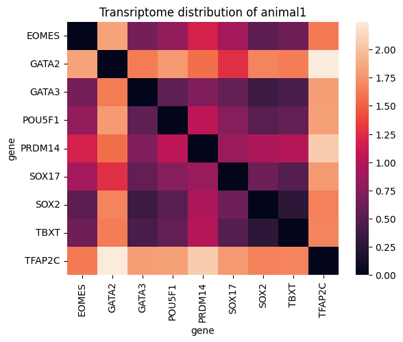
animal2 (9, 9)
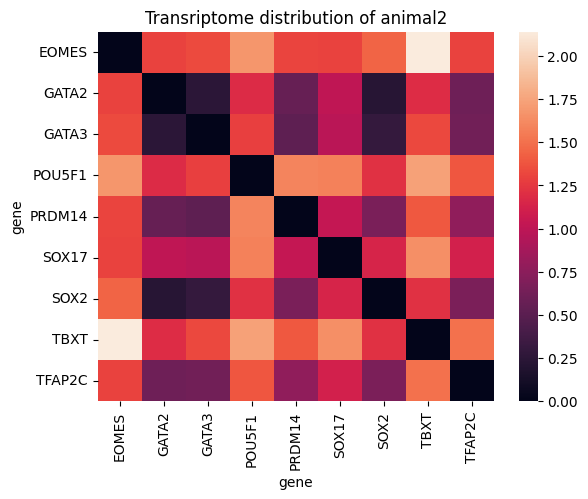
animal3 (9, 9)
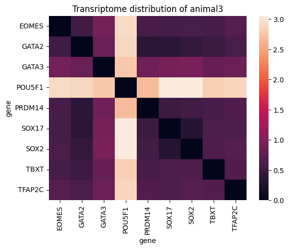
Check mean of gene distance matrices
animal1 1.0
animal2 1.0
animal3 1.0
Check variance of gene distance matrices
animal1 0.40442990488007785
animal2 0.30011913692762043
animal3 0.9318314137889337
Gromov-Wasserstein Optimal Transport
Calculate the optimal transport plan by solving the Entropy-regulalized GW problem
[16]:
spe_ot = spe_ot.gromov_wasserstein_ot()
Platform 'METAL' is experimental and not all JAX functionality may be correctly supported!
Metal device set to: Apple M3 Max
systemMemory: 128.00 GB
maxCacheSize: 48.00 GB
WARNING: All log messages before absl::InitializeLog() is called are written to STDERR
W0000 00:00:1760618050.603898 2904671 mps_client.cc:510] WARNING: JAX Apple GPU support is experimental and not all JAX functionality is correctly supported!
I0000 00:00:1760618050.614047 2904671 service.cc:145] XLA service 0x10d6424a0 initialized for platform METAL (this does not guarantee that XLA will be used). Devices:
I0000 00:00:1760618050.614056 2904671 service.cc:153] StreamExecutor device (0): Metal, <undefined>
I0000 00:00:1760618050.615215 2904671 mps_client.cc:406] Using Simple allocator.
I0000 00:00:1760618050.615230 2904671 mps_client.cc:384] XLA backend will use up to 103078739968 bytes on device 0 for SimpleAllocator.
epsilon = 0.0100000 converged
Calculate normalized OTP (gene-to-gene correspondence rate)
[17]:
spe_ot = spe_ot.normalize_otp()
Transcriptomic discrepancy
[18]:
spe_ot.plot_transcriptomic_discrepancy()
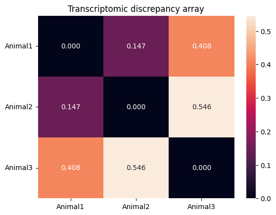
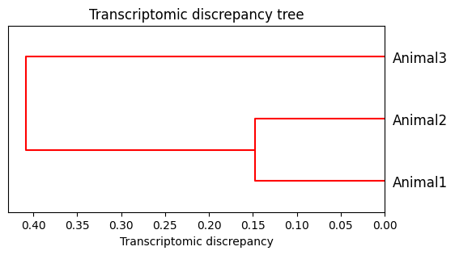
Gene-to-gene Corespondence
[19]:
if spe_ot.data_option == "dataset1":
target_genes = ["GATA3", "GATA2", "EOMES", "SOX17", "PRDM1", "TFAP2C"]
target_species_pairs = "human_mouse"
# target_species_pairs = "mouse_human"
elif spe_ot.data_option == "dataset2":
target_genes = ["GATA3", "POU5F1", "SOX2"]
target_species_pairs = "human_chimpanzee"
elif spe_ot.data_option == "custom":
target_genes = ["GATA3", "GATA2", "EOMES"]
target_species_pairs = "animal1_animal2"
top_n = 10
[20]:
primate_gene_notation = ["all_capital_italic"] * len(spe_ot.species)
spe_gene_dict = dict(zip(spe_ot.species, primate_gene_notation))
# Reflects differences in genetic notation between primates and other species
if spe_ot.data_option == "dataset2":
spe_gene_dict["mouse"] = "capitalized_italic"
elif spe_ot.data_option == "dataset1":
spe_gene_dict["Ms"] = "capitalized_italic"
Summarize results in Dashboard
[21]:
spe_ot.dashboard(target_species_pairs, target_genes, top_n)
Animal1 -> Animal2: GATA3 Animal1 -> Animal2: GATA2 Animal1 -> Animal2: EOMES
shape: (9, 3) shape: (9, 3) shape: (9, 3)
┌───────┬────────┬─────────┐ ┌───────┬────────┬──────────┐ ┌───────┬────────┬──────────┐
│ index ┆ Gene ┆ Value │ │ index ┆ Gene ┆ Value │ │ index ┆ Gene ┆ Value │
│ --- ┆ --- ┆ --- │ │ --- ┆ --- ┆ --- │ │ --- ┆ --- ┆ --- │
│ u32 ┆ str ┆ str │ │ u32 ┆ str ┆ str │ │ u32 ┆ str ┆ str │
╞═══════╪════════╪═════════╡ ╞═══════╪════════╪══════════╡ ╞═══════╪════════╪══════════╡
│ 1 ┆ SOX2 ┆ 49.3373 │ │ 1 ┆ EOMES ┆ 100.0000 │ │ 1 ┆ SOX17 ┆ 100.0000 │
│ 2 ┆ GATA2 ┆ 32.6457 │ │ 2 ┆ POU5F1 ┆ 0.0000 │ │ 2 ┆ PRDM14 ┆ 0.0000 │
│ 3 ┆ GATA3 ┆ 18.0133 │ │ 3 ┆ SOX17 ┆ 0.0000 │ │ 3 ┆ GATA3 ┆ 0.0000 │
│ 4 ┆ PRDM14 ┆ 0.0032 │ │ 4 ┆ GATA2 ┆ 0.0000 │ │ 4 ┆ SOX2 ┆ 0.0000 │
│ 5 ┆ TFAP2C ┆ 0.0006 │ │ 5 ┆ GATA3 ┆ 0.0000 │ │ 5 ┆ GATA2 ┆ 0.0000 │
│ 6 ┆ SOX17 ┆ 0.0000 │ │ 6 ┆ PRDM14 ┆ 0.0000 │ │ 6 ┆ TFAP2C ┆ 0.0000 │
│ 7 ┆ POU5F1 ┆ 0.0000 │ │ 7 ┆ SOX2 ┆ 0.0000 │ │ 7 ┆ POU5F1 ┆ 0.0000 │
│ 8 ┆ EOMES ┆ 0.0000 │ │ 8 ┆ TBXT ┆ 0.0000 │ │ 8 ┆ TBXT ┆ 0.0000 │
│ 9 ┆ TBXT ┆ 0.0000 │ │ 9 ┆ TFAP2C ┆ 0.0000 │ │ 9 ┆ EOMES ┆ 0.0000 │
└───────┴────────┴─────────┘ └───────┴────────┴──────────┘ └───────┴────────┴──────────┘
Confirmation of expression levels of target genes and corresponding genes
[22]:
if spe_ot.data_option == "dataset1":
spe_ot.corresponding_gene_expressions_separated_heatmap(target_species_pairs, spe_gene_dict, target_genes, top_n, fujiwara_opt=True)
else:
spe_ot.corresponding_gene_expressions_separated_heatmap(target_species_pairs, spe_gene_dict, target_genes, top_n)
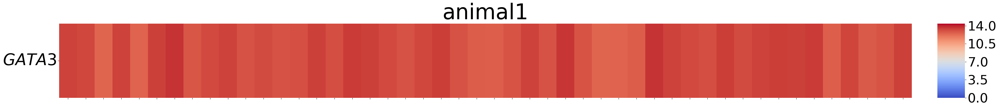
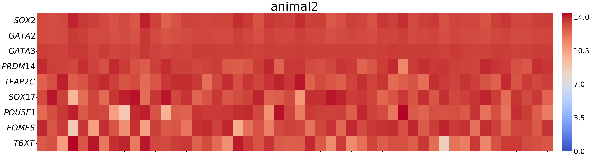
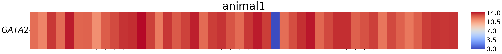
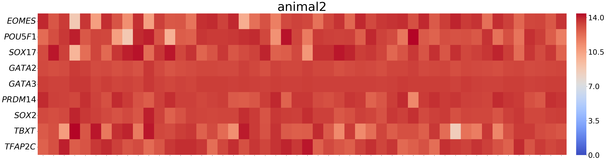
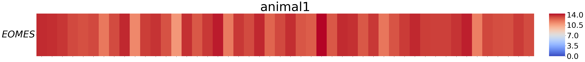
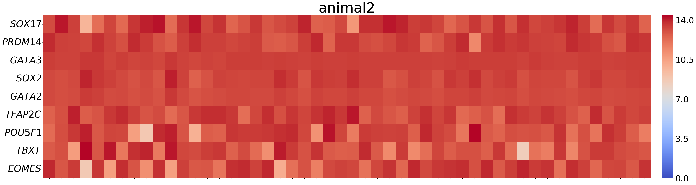
Section 4. Visualization
Check gene expression level
[23]:
if data.data_option == "custom":
spe = "animal1"
thr = 12.1
genes = ["POU5F1", "SOX2"]
elif data.data_option == "dataset2":
spe = "mouse"
thr = 4.5
if spe == "human":
genes = ["POU5F1", "SOX2"]
else:
genes = ["ZXDC", "ZZZ3"]
elif data.data_option == "dataset1":
spe = "Hs"
thr = 12.1
genes = ["POU5F1", "SOX2"]
[24]:
data.check_gene_exp(spe, genes[0], thr)
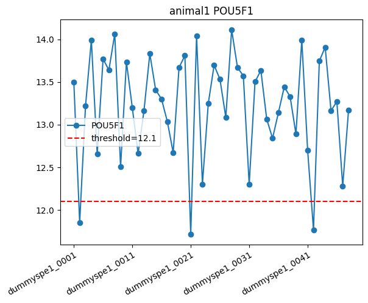
[25]:
data.plot_read()
# Shape of Polars DataFrame with cell names added to the beginning of gene expression data
animal1 (48, 11)
animal2 (50, 11)
animal3 (49, 11)
animal1 Shape of the gene expression matrix (48, 10)
# Showing the first 5 rows (cells) and first 6 columns (genes) of the expression matrix for 'animal1'
gene BLIMP1 EOMES GATA2 GATA3 POU5F1 \
dummyspe1_0001 10.076089 13.911670 12.189479 13.351727 13.499112
dummyspe1_0002 13.436575 13.848850 11.544985 13.286221 11.850287
dummyspe1_0003 10.956706 13.661201 13.620851 12.499607 13.219348
dummyspe1_0004 14.019885 13.204683 12.268121 13.397857 13.990831
dummyspe1_0005 10.434193 13.057946 14.092186 12.509350 12.654813
gene PRDM14
dummyspe1_0001 13.383226
dummyspe1_0002 12.456498
dummyspe1_0003 11.442472
dummyspe1_0004 12.688756
dummyspe1_0005 12.649078
animal2 Shape of the gene expression matrix (50, 10)
# Showing the first 5 rows (cells) and first 6 columns (genes) of the expression matrix for 'animal2'
gene BLIMP1 EOMES GATA2 GATA3 POU5F1 \
dummyspe2_0001 13.461428 13.916166 13.235181 13.504653 12.294332
dummyspe2_0002 13.216149 12.875509 13.116889 13.390431 13.075044
dummyspe2_0003 12.487833 13.565608 13.143222 13.375278 13.614801
dummyspe2_0004 11.437857 8.782073 13.559182 13.614845 14.067155
dummyspe2_0005 13.299773 13.656225 13.419186 13.593613 12.821009
gene PRDM14
dummyspe2_0001 13.897236
dummyspe2_0002 13.429584
dummyspe2_0003 13.383846
dummyspe2_0004 13.275919
dummyspe2_0005 13.764955
animal3 Shape of the gene expression matrix (49, 10)
# Showing the first 5 rows (cells) and first 6 columns (genes) of the expression matrix for 'animal3'
gene BLIMP1 EOMES GATA2 GATA3 POU5F1 \
dummyspe3_0001 13.825657 12.752147 13.227041 13.546023 13.693367
dummyspe3_0002 13.850845 14.105622 12.915244 11.649617 14.154232
dummyspe3_0003 13.289959 13.643528 13.328793 12.985367 12.871920
dummyspe3_0004 13.965624 11.741195 12.771634 12.706453 14.135341
dummyspe3_0005 13.776148 11.181478 13.290860 12.944668 14.214662
gene PRDM14
dummyspe3_0001 13.573933
dummyspe3_0002 13.342498
dummyspe3_0003 13.614067
dummyspe3_0004 13.735485
dummyspe3_0005 13.728281
Plot the distribution of gene expression levels
[26]:
# spe_ot2 = SpeciesOT(data)
# spe_ot2.visualization()
spe_ot.visualization()
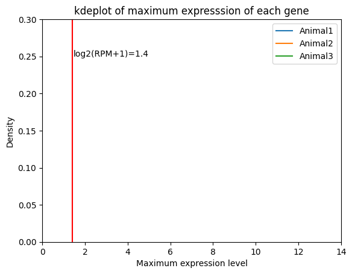
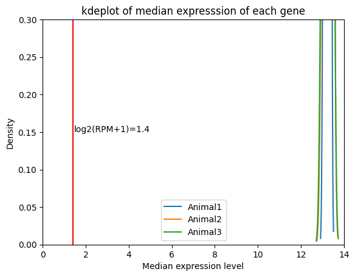
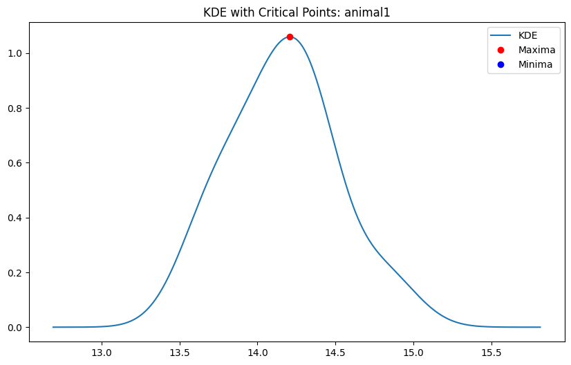
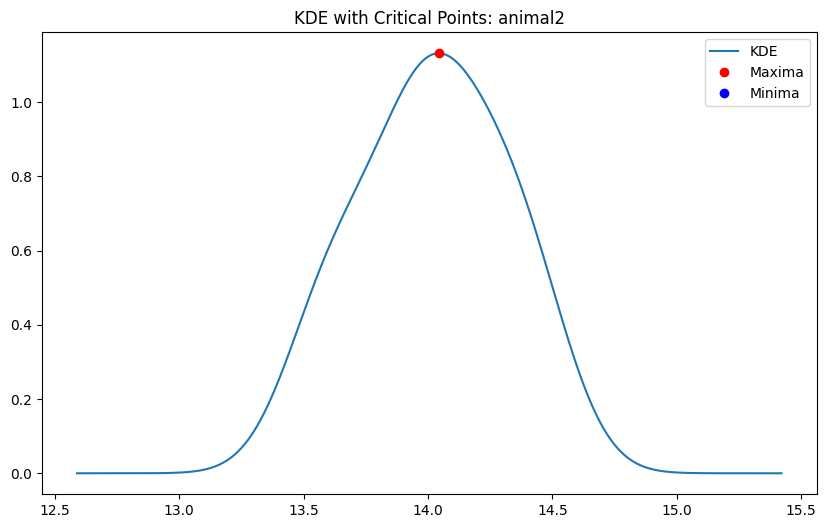
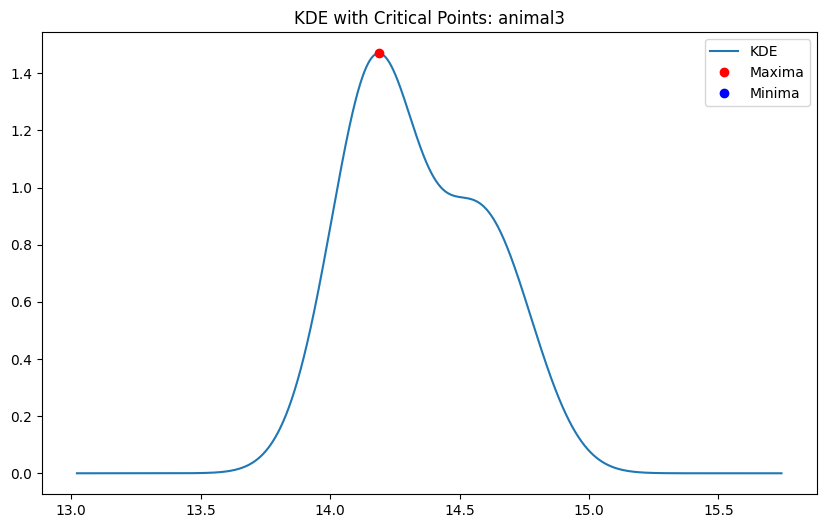
Check data size after preprocessing
[27]:
# spe_ot2 = SpeciesOT(data)
# spe_ot2.preprocessing(
# ).data_size_after_preprocessing()
spe_ot.data_size_after_preprocessing()
Shape of adata after normalization and preprocessing
animal1 (48, 9)
animal2 (50, 9)
animal3 (49, 9)
# genes with all zero expression
animal1 0
animal2 0
animal3 0
custom
custom
custom
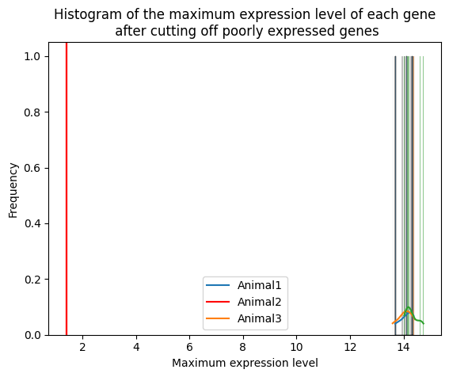
Plot which genes remained after preprocessing
[28]:
labeled_genes = {}
for spe in spe_ot.species:
labeled_genes[spe] = []
if spe_ot.data_option == "dataset1":
labeled_genes["Ms"] = ["TBXT", "PRDM1", "PRDM14", "TFAP2C"]
labeled_genes["Mf"] = ["GATA3", "GATA2", "EOMES", "SOX17", "TBXT", "PRDM1", "PRDM14", "TFAP2C"]
labeled_genes["Hs"] = ["GATA3", "GATA2", "EOMES", "SOX17", "PRDM1", "TFAP2C"]
elif spe_ot.data_option == "dataset2":
for spe in spe_ot.species:
labeled_genes[spe] = ["POU5F1", "SOX2", "NANOG"]
[29]:
# spe_ot2 = SpeciesOT(data)
# spe_ot2.preprocessing(
# ).plot_pca_highlighting_genes_retained_after_preprocessing_plotly("all_gene", labeled_genes, spe_gene_dict)
spe_ot.plot_pca_highlighting_genes_retained_after_preprocessing("all_gene", labeled_genes, spe_gene_dict)
Explain Variance Ratio : [0.21484661 0.19019369]
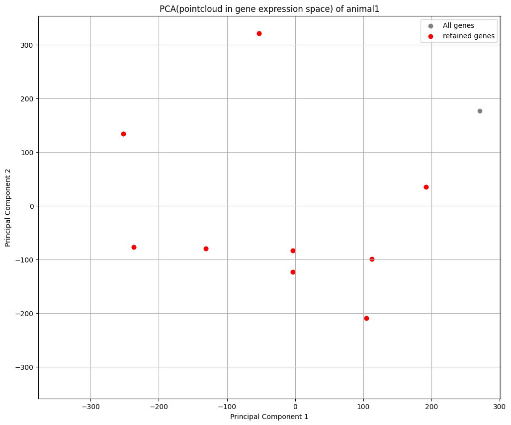
Explain Variance Ratio : [0.20453963 0.16413542]
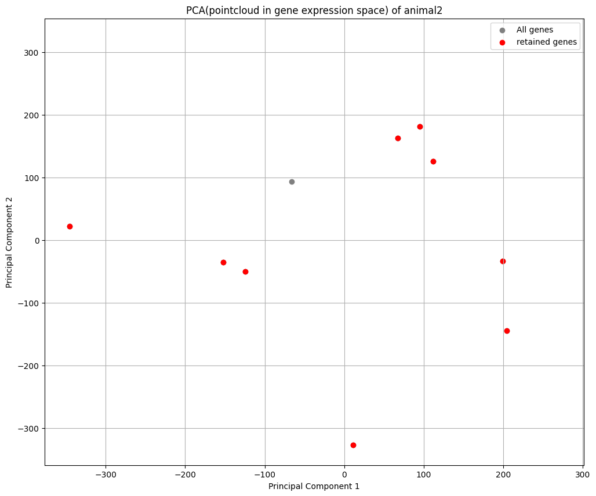
Explain Variance Ratio : [0.19539738 0.16940214]
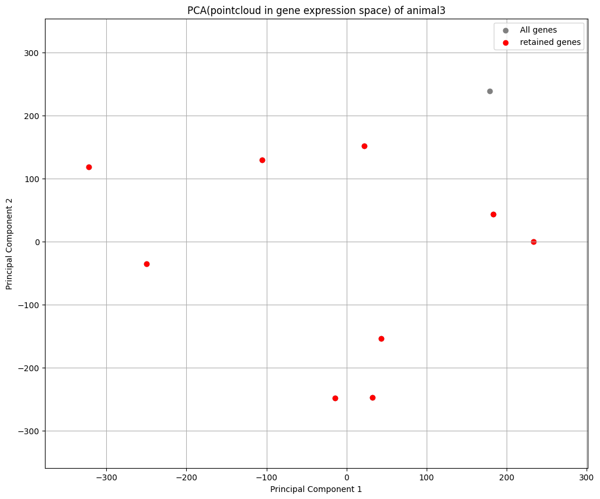
Visualization using Plotly is also possible (commented out for display purposes)
[30]:
# spe_ot2 = SpeciesOT(data)
# spe_ot2.preprocessing(
# ).plot_pca_highlighting_genes_retained_after_preprocessing_plotly("all_gene", labeled_genes, spe_gene_dict)
# spe_ot.plot_pca_highlighting_genes_retained_after_preprocessing_plotly("all_gene", labeled_genes, spe_gene_dict)
Check calculated GW distance and OTP
[31]:
# spe_ot2 = SpeciesOT(data)
# spe_ot2.preprocessing(
# ).calculate_dismat(
# ).gromov_wasserstein_ot(
# ).check_optimal_transport_results()
spe_ot.check_optimal_transport_results()
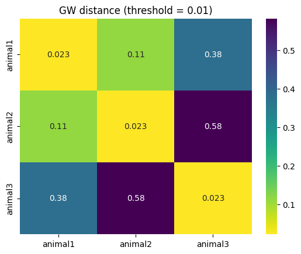
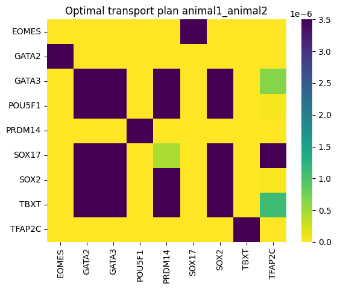
Plot OTP after thresholding the top 5%
[32]:
# spe_ot = SpeciesOT(Data)
# spe_ot.preprocessing(
# ).calculate_dismat(
# ).gromov_wasserstein_ot(
# ).filter_otp()
spe_ot.filter_otp()
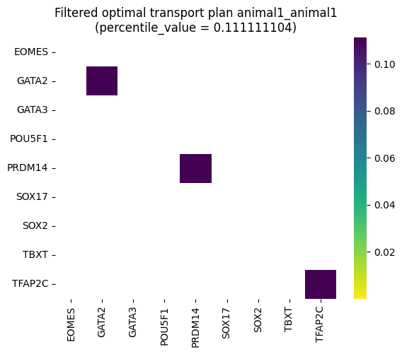
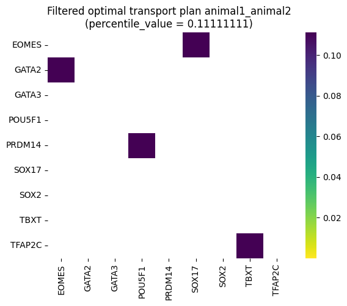
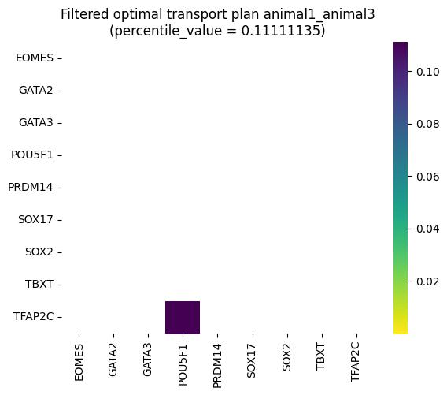
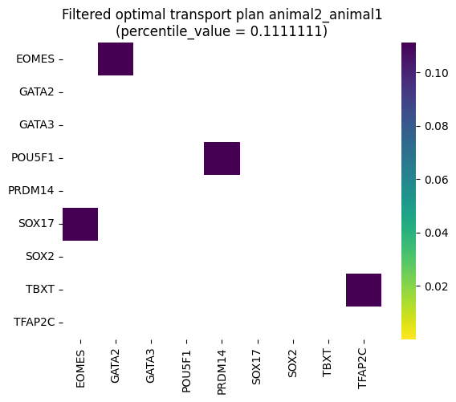
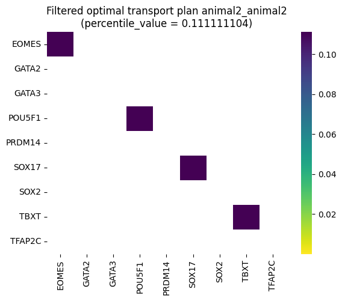
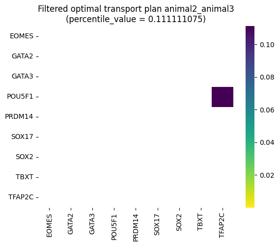
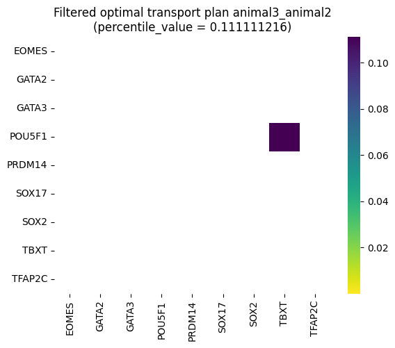
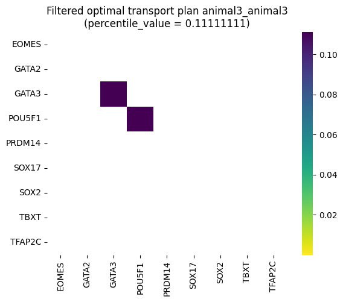
Creat heatmap of common genes between species
[33]:
# spe_ot2 = SpeciesOT(Data)
# spe_ot2.preprocessing(
# ).calculate_dismat(
# ).gromov_wasserstein_ot(
# ).intersection_of_gene_lists()
spe_ot.intersection_of_gene_lists()
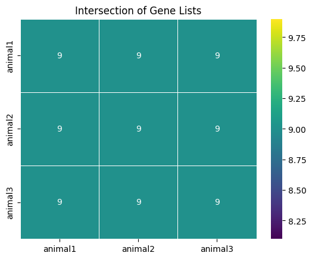
Check the distribution of the values of the normalized OTP
[34]:
# spe_ot2 = SpeciesOT(data)
# spe_ot2.preprocessing(
# ).calculate_dismat(
# ).gromov_wasserstein_ot(
# ).normalize_otp(
# ).distribution_of_values()
spe_ot.distribution_of_values()
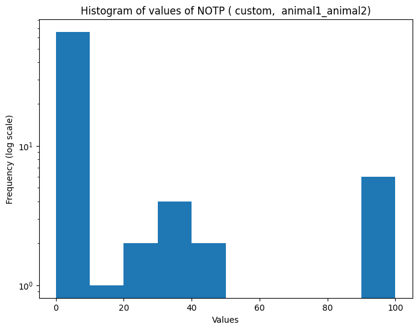
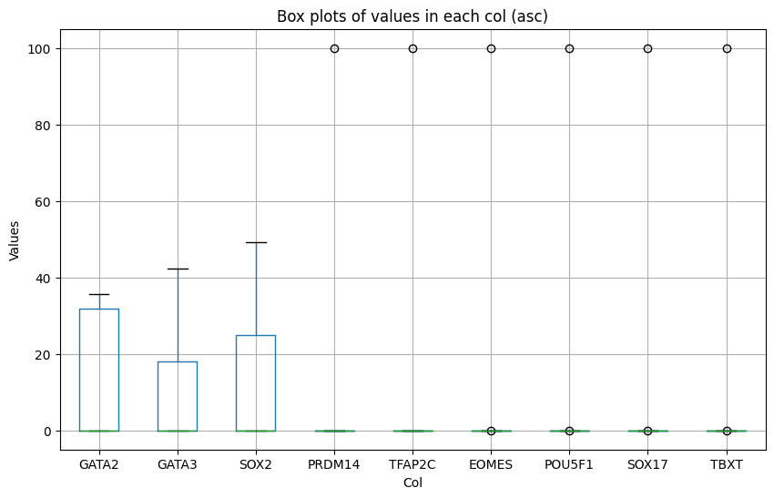
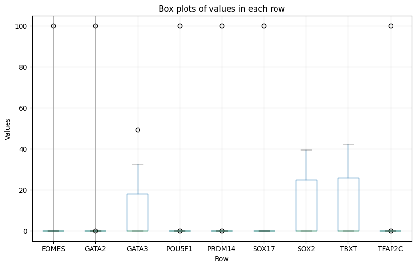
Section 5. Chained Processing
[35]:
data2 = Data(config).read_csv().normalization().read_tf()
animal1 (48, 10)
animal2 (50, 10)
animal3 (49, 10)
# data size after noise reduction and normalization
start RECODE for scRNA-seq data
end RECODE for scRNA-seq
log: {'seq_target': 'RNA', '#significant genes': np.int64(10), '#non-significant genes': np.int64(0), '#silent genes': np.int64(0), 'ell': np.int64(9), 'Elapsed time': '0h 0m 0s 001ms', 'solver': 'full'}
animal1 (48, 10)
start RECODE for scRNA-seq data
end RECODE for scRNA-seq
log: {'seq_target': 'RNA', '#significant genes': np.int64(10), '#non-significant genes': np.int64(0), '#silent genes': np.int64(0), 'ell': np.int64(9), 'Elapsed time': '0h 0m 0s 000ms', 'solver': 'full'}
animal2 (50, 10)
start RECODE for scRNA-seq data
end RECODE for scRNA-seq
log: {'seq_target': 'RNA', '#significant genes': np.int64(10), '#non-significant genes': np.int64(0), '#silent genes': np.int64(0), 'ell': np.int64(9), 'Elapsed time': '0h 0m 0s 000ms', 'solver': 'full'}
animal3 (49, 10)
# Number of genes
(1639,)
[39]:
spe_ot2 = SpeciesOT(data2).preprocessing(
).calculate_gene_distance_matrix(
).gromov_wasserstein_ot(
).normalize_otp(
).dashboard(
target_species_pairs="animal1_animal2",
target_genes=["GATA3", "GATA2", "EOMES"],
top_n=10
)
No minima found.
No minima found.
No minima found.
first_min_x[animal1] is None
first_min_x[animal2] is None
first_min_x[animal3] is None
# Shape of gene expression data before masking
animal1 (48, 9)
animal2 (50, 9)
animal3 (49, 9)
# Shape of adata after removing columns (gene) where even the maximum value is below the threshold
animal1 (48, 9)
animal2 (50, 9)
animal3 (49, 9)
# Number of genes for which the maximum expression value is greater than a threshold value
animal1 (9,)
animal2 (9,)
animal3 (9,)
epsilon = 0.0100000 converged
Animal1 -> Animal2: GATA3 Animal1 -> Animal2: GATA2 Animal1 -> Animal2: EOMES
shape: (9, 3) shape: (9, 3) shape: (9, 3)
┌───────┬────────┬─────────┐ ┌───────┬────────┬──────────┐ ┌───────┬────────┬──────────┐
│ index ┆ Gene ┆ Value │ │ index ┆ Gene ┆ Value │ │ index ┆ Gene ┆ Value │
│ --- ┆ --- ┆ --- │ │ --- ┆ --- ┆ --- │ │ --- ┆ --- ┆ --- │
│ u32 ┆ str ┆ str │ │ u32 ┆ str ┆ str │ │ u32 ┆ str ┆ str │
╞═══════╪════════╪═════════╡ ╞═══════╪════════╪══════════╡ ╞═══════╪════════╪══════════╡
│ 1 ┆ SOX2 ┆ 49.3373 │ │ 1 ┆ EOMES ┆ 100.0000 │ │ 1 ┆ SOX17 ┆ 100.0000 │
│ 2 ┆ GATA2 ┆ 32.6457 │ │ 2 ┆ POU5F1 ┆ 0.0000 │ │ 2 ┆ PRDM14 ┆ 0.0000 │
│ 3 ┆ GATA3 ┆ 18.0133 │ │ 3 ┆ SOX17 ┆ 0.0000 │ │ 3 ┆ GATA3 ┆ 0.0000 │
│ 4 ┆ PRDM14 ┆ 0.0032 │ │ 4 ┆ GATA2 ┆ 0.0000 │ │ 4 ┆ SOX2 ┆ 0.0000 │
│ 5 ┆ TFAP2C ┆ 0.0006 │ │ 5 ┆ GATA3 ┆ 0.0000 │ │ 5 ┆ GATA2 ┆ 0.0000 │
│ 6 ┆ SOX17 ┆ 0.0000 │ │ 6 ┆ PRDM14 ┆ 0.0000 │ │ 6 ┆ TFAP2C ┆ 0.0000 │
│ 7 ┆ POU5F1 ┆ 0.0000 │ │ 7 ┆ SOX2 ┆ 0.0000 │ │ 7 ┆ POU5F1 ┆ 0.0000 │
│ 8 ┆ EOMES ┆ 0.0000 │ │ 8 ┆ TBXT ┆ 0.0000 │ │ 8 ┆ TBXT ┆ 0.0000 │
│ 9 ┆ TBXT ┆ 0.0000 │ │ 9 ┆ TFAP2C ┆ 0.0000 │ │ 9 ┆ EOMES ┆ 0.0000 │
└───────┴────────┴─────────┘ └───────┴────────┴──────────┘ └───────┴────────┴──────────┘
End
[ ]:
[ ]: